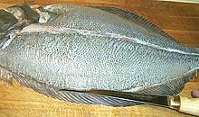
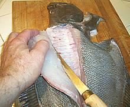
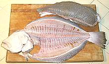

Scales: This fish has medium size scales on both
sides. Adhesion is fairly good, so they need a little effort to scrape
off, and some scales may need to be shaved off, as shown in the photo.
Scales: This fish has medium size scales on both
sides. Adhesion is fairly good, so they need a little effort to scrape
off, and some scales may need to be shaved off, as shown in the photo.
This fish is native to both sides of Baja California and up the coast almost to the Canadian border, ranging from the surf zone to 600 feet depth. It can grow to nearly 5 feet and 72 pounds, but the photo specimen was 22 inches long and weighed 3 pounds 14 ounces factory cleaned - probably about 4 pounds 2 ounces with guts included.
This fish is easily identified by the high arch of the lateral line above the pectoral fin on both sides, and the blind side is blinding white. Most flat fish sold here in Southern California are dark on both sides. The dark side color and pattern will vary some depending on where the fish was caught. This is considered a very desirable eating fish and is not considered endangered, Red List status LC (Least Concern), but this applies mainly to the Central California stock, which has been increasing. The Southern California stock is seriously depleted, but has been stable for some time.
The California Halibut is a little odd for a flounder. It starts life swimming normally with an eye on each side, then one eye migrates to the other side and it settles down to life on the bottom. Officially it is a left-eye large-tooth flounder, but almost half of them have their eyes on the right side. Unlike many flounders, it tends to get impatient waiting for something to eat, so it often goes actively hunting well off the bottom, especially for anchovies, and has been observed even to leap out of the water in pursuit of an anchovy. They have lots of teeth, and they bite, hard, if annoyed - and if you catch one you can be pretty sure it is annoyed.
More on Flounder Families.
California Halibut flesh is white, very mild, delicate in flavor and texture, and flakes apart easily on the plate. It is an ideal fish for those who like their fish "white and lite", and for fancy chefs who don't want fish flavors interfering with their delicate sauces. For these reasons it is considered a premium eating fish that fetches a high price. For these very same reasons, I consider it very much overpriced - I prefer my fish to taste like fish and have better texture.
Cooking: This fish works best with dry cooking methods such as frying, grilling or baking. Pieces of fillets can be poached if they aren't too large and the poaching time is very short (4 minutes), but it will be rather bland. You definitely don't want to try to use this fish for soups or stews - it will just fall apart into individual muscle fibers. My favorite way to eat this fish is lightly powdered with rice flour and pan fried, skin-on, eaten with my simple Lemon Wine Sauce.
Buying: The photo specimen was purchased from a
Philippine market in Los Angeles (Eagle Rock) for 2017 US $7.99 / pound.
This is considered a premium fish, so the price is high - the lowest
price I've seen is 2014 US $5.99 / pound.
Scales: This fish has medium size scales on both
sides. Adhesion is fairly good, so they need a little effort to scrape
off, and some scales may need to be shaved off, as shown in the photo.
Cleaning: This fish is easy to clean - there isn't
a whole lot in it. It is so large you probably won't be cooking it
head-on, so just remove the head and you can scoop everything out
easily. Pull the gills out of the head if you will be making stock.

Filleting: This fish is very easy to fillet. First
make the usual cuts to remove the head. Next make a cut down the center
to the backbone. Except right up near the head, just follow the lateral
line. Next, outline the fillet by cutting in from fin edges through the
skin at a very shallow angle.

Fillet from the backbone outward for the bottom fillet. Try to stay on
the right side of the fin rays, but If you should get under them, just
deepen your fin edge cuts until they meet the main cut. You can do the
same for the top fillet, but I find it easier to cut from the fin inward
like for round fish, Do the same for the blind side. Unlike some flat
fish, this fish is quite meaty on the blind side due, to the amount of
time it spends hunting off the bottom. You should be easily able to
produce a "see through" skeleton.
 Skin: The skin has very moderate shrinkage so fillets can
be fried skin-on - in fact you can even poach skin-on and the skin will
barely distort the meat, then it becomes very soft. If desired, the
skin can be removed fairly easily using the long knife and cutting board
Method. The raw skin is quite
strong, so you can use a fairly steep angle so you take no flesh. You
will lose the edge where it covered the fin rays, as you can see in the
photo, but that isn't a lot of meat. Just add it to the stock pot along
with the skins - or fry it as a snack for the cook, eaten with a few
drops of lemon juice.
Skin: The skin has very moderate shrinkage so fillets can
be fried skin-on - in fact you can even poach skin-on and the skin will
barely distort the meat, then it becomes very soft. If desired, the
skin can be removed fairly easily using the long knife and cutting board
Method. The raw skin is quite
strong, so you can use a fairly steep angle so you take no flesh. You
will lose the edge where it covered the fin rays, as you can see in the
photo, but that isn't a lot of meat. Just add it to the stock pot along
with the skins - or fry it as a snack for the cook, eaten with a few
drops of lemon juice.
Yield: A 3 pound 14 ounce (factory cleaned) fish
yielded 2 pound 9 ounces of skin-on fillet (66%). Skin off was 2 pounds
4-1/2 ounces (58%). A guts-in fish would be more like 53% and 41%,
still pretty good yield.

Stock: The heads, bones and fins of this fish make a
mild, very usable stock. Be sure to pull the gills from the head as they
can make a stock bitter. You can include the skins if you have removed
them from the fillets. For details see our
Fish Stock page.
The stock will have a significant amount of oil, which you should remove
using your gravy separator.